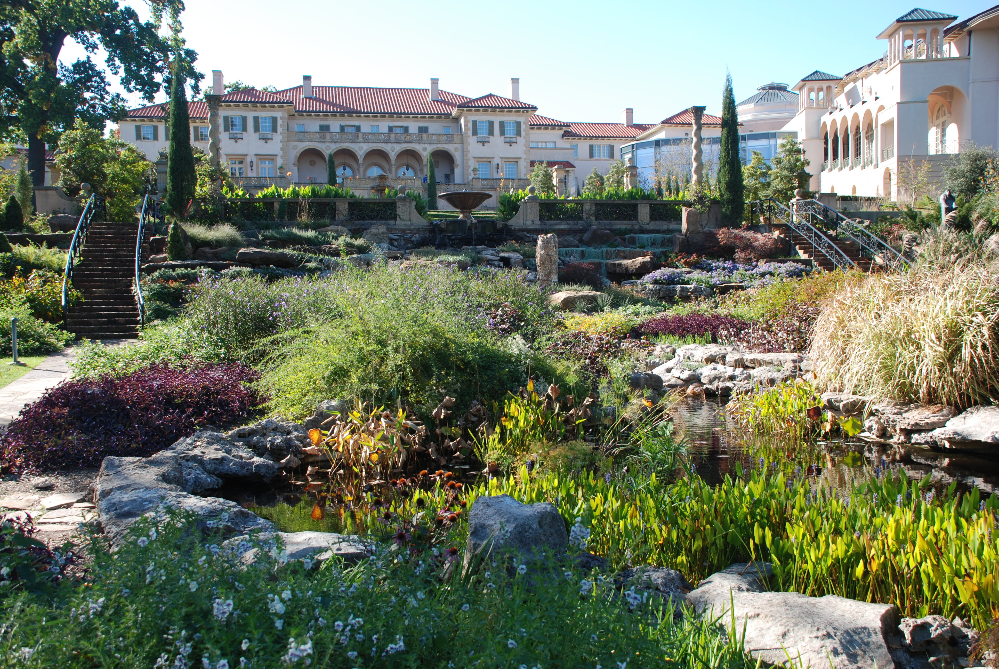
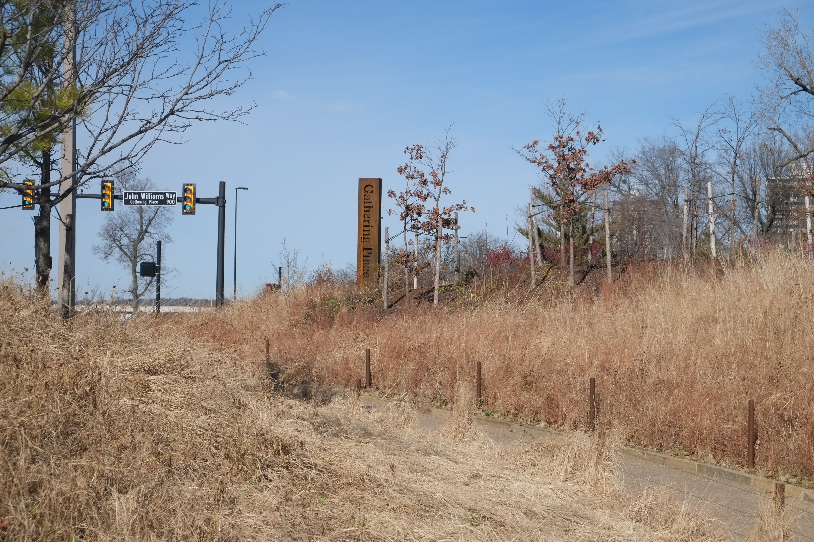

Nobody markets Tulsa's spring correctly, and it is a genuine civic failure. Every travel piece about queer Tulsa leads with October, because that's when Pride happens, or with summer, because somebody has to warn you about the heat. Spring gets skipped entirely, which is absurd, because spring is the season when this city is at its most photogenic, its patios reopen all at once, and the gardens that Tulsa quietly takes very seriously put on the best show they'll give all year.
This is the season to come if you want mild weather, blooming museums, and a city that hasn't yet filled every hotel room for a festival weekend. Here's what's actually worth your time between March and May, who's throwing it, and how to build a weekend around it.
Why Spring Is the Season Tulsa Doesn't Market Correctly
Here's the honest math: Tulsa Pride moved to October in 2024, which means spring carries none of the festival-weekend price gouging and none of the triple-digit heat that defines a Tulsa summer. What it does carry is a working botanical garden at a world-class art museum, a 45-minute day trip to one of the most absurdly pink parks in the country, and the exact weather window where every patio in the Arts District and Brookside reopens at once, like the whole city exhaled at the same time.
If you're planning a trip and don't care about catching Pride specifically, spring is the smarter visit. Flights are cheaper, hotels aren't booked out, and you get Tulsa at the moment it looks the way the postcards pretend it always does.
The Garden Circuit: Philbrook's Art in Bloom
This is one of the few events in Tulsa where the queer community, the art crowd, and the garden-club set are all standing in the same room, and it is a genuinely lovely room to be standing in. Go on a weekday morning if you want the gardens closer to yourself.

The Azalea Festival: A Worthy Day Trip
Gathering Place Wakes Back Up
Gathering Place, at 2650 S John Williams Way on the Arkansas River, is one of the best free public parks in the country, and spring is when it stops being merely impressive and starts being the place you want to spend every free afternoon. The splash pad isn't running yet, but the playgrounds, boathouse, and river trails are at their most pleasant before the heat arrives, and the park typically hosts a mid-April Earth Day event with free admission, performances, and hands-on activities for families and adults alike. Check gatheringplace.org for that year's exact date.
OkEq's Spring Calendar, Before the Gala
The Patios Reopen: Where Gay Tulsa Drinks Outside Again
Somewhere between the last freeze and the first truly unbearable afternoon, every patio in the city comes back to life, and that window is spring, in full.
None of that counts the actual gay bars, where spring just means the crowd spreads out onto whatever sidewalk seating they've got rather than staying crammed inside all night. Want the full rundown of every gay bar in the city and what makes each one worth your time? Read the complete Tulsa gay bars guide.
What's Coming: June Warm-Ups and the October Main Event
Spring is the lead-up, not the main event, and it's worth knowing the shape of the rest of the year while you're planning. The Tulsa Eagle still throws its own smaller Pride Fest in June as a warm-up, and OkEq's broader June programming, film screenings, discussions, health events, continues straight through. The actual main festival, the one with tens of thousands of attendees and a parade through downtown, is run by OkEq in October now, specifically because June heat made it genuinely dangerous to stand in the sun in full drag for hours. Read the full Tulsa Pride 2026 guide if you're weighing whether to time a trip around it instead.
If you'd rather skip the festival crowds entirely and just see the city at its prettiest, spring is still the better call.
Your Perfect Spring Weekend in Gay Tulsa
Friday Evening
- Arrive, check in downtown or in the Arts District
- Dinner at Juniper in the Blue Dome District
- First patio of the trip at St. Vitus Bar or Mercury Lounge in Brookside
Saturday
- Morning at Philbrook Museum for the gardens (and Art in Bloom, if the timing lines up)
- Lunch and coffee at Pony Coffee in the Arts District
- Afternoon at Gathering Place on the river
- Night out at Club Majestic or karaoke at Yellow Brick Road
Sunday
- Drag brunch at Elote, book ahead
- Stop by OkEq's Equality Center if there's a community event on the calendar
- Day trip option: the Azalea Festival at Honor Heights Park in Muskogee, 45 minutes south
Tulsa in spring is the version of this city that convinces people to move here. The gardens are doing their best work, the patios are full again, and nobody's fighting you for a hotel room because there's a festival in town. Come see it before everyone else figures out that October isn't the only month worth booking.
See this week's full event calendar for what's actually happening right now, and check the LGBTQ+ Business Directory for every queer-owned spot worth your spring-weekend dollars.
Find It
Philbrook Museum of Art · 2727 S Rockford Rd, Tulsa, OK 74114
Gathering Place · 2650 S John Williams Way, Tulsa, OK 74114
Know something we don't?
Got an event, venue, or org we should be covering? Hit submit and we'll add it.
Submit an Event →